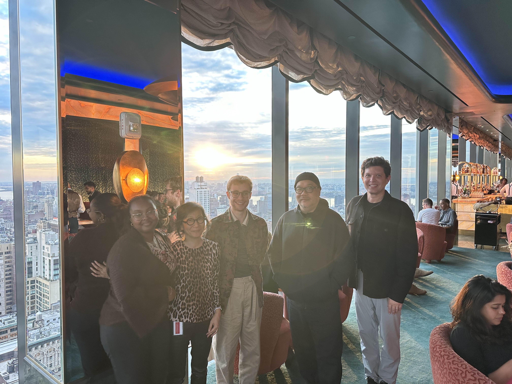
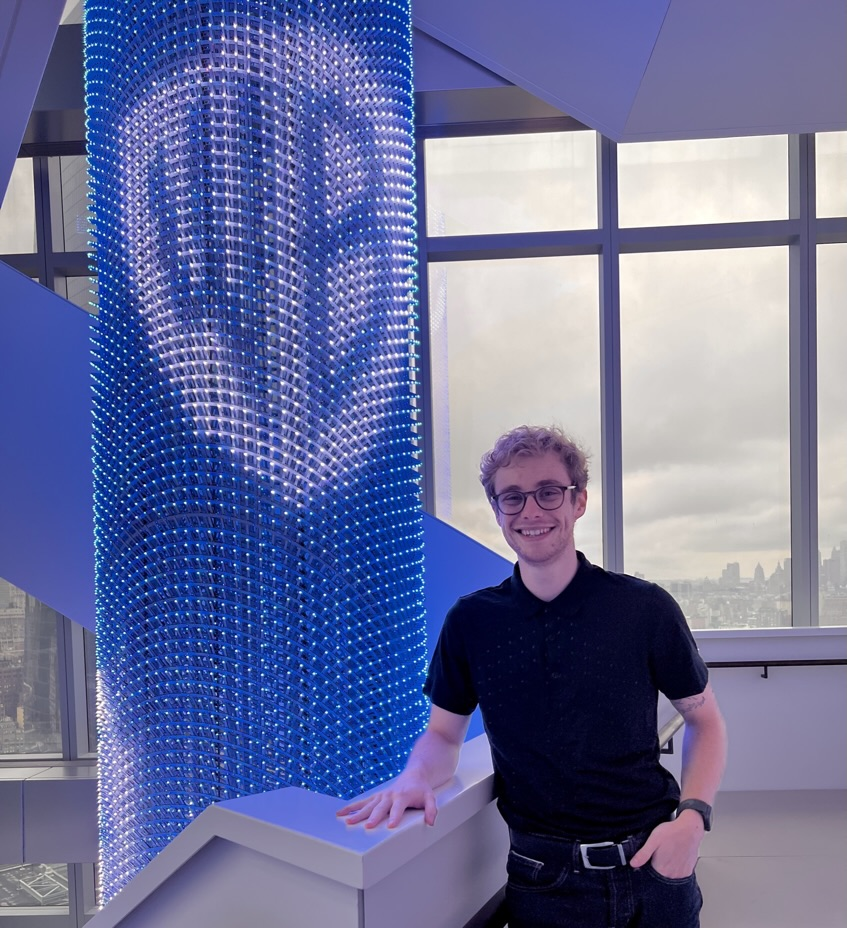
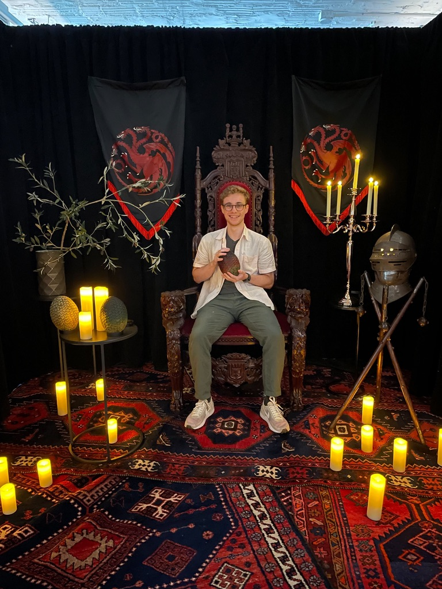
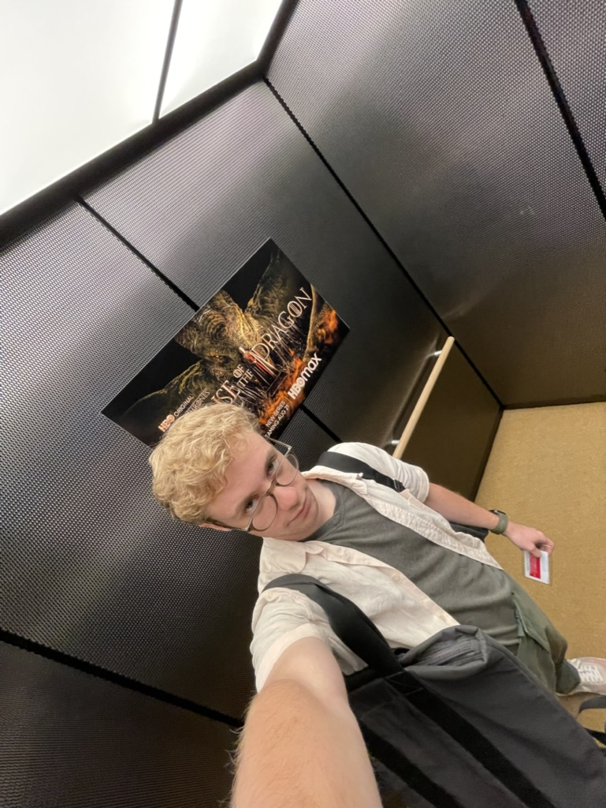

- Context
WBD Site ☞- Roles
Product Manager
Designer
User Researcher
- Date
Jun. '22 - Aug. '22
Jul. '23 - Jul. '24
During the summer of 2023, I worked as product management intern on the Discovery+ app. I grew the ‘My List’ north-star metric with ‘Labs’ team by leading a re-design of the UI, utilizing CX data. I automated CX data ingestion, now nine times faster, by ideating and building an ML-based CX data sentiment analysis tool.
I returned full time to WBD in the summer of 2023 as an Associate Product Manager part of WBD's first APM cohort. I was the main PM for the legacy WarnerMedia (TNT, TBS, truTV.), Discovery (TLC, FoodNetwork, HGTV, etc.), and WarnerMedia (Cartoon Network, TCM, [as]) brands digital properties end to end. I was also part of a tiger team working on WBD's approach to enter the FAST streaming market.
FAST Product & Design Kickoff Summit
Movie Screening Portrait:
House of the Dragon Egg:
Lots of show promotions everywhere:
